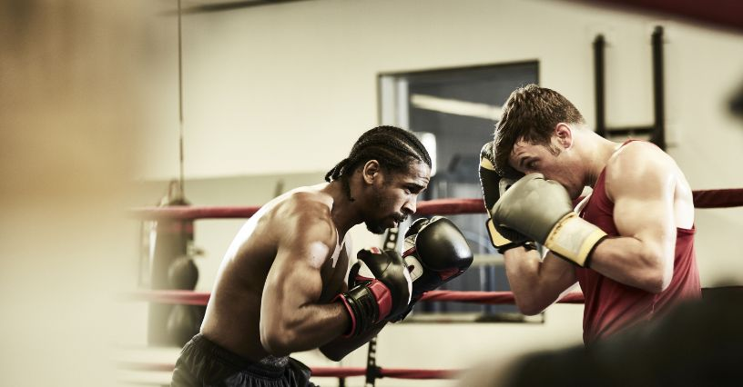

Spis treści:
Boks to sport walki, który z pozoru może wydawać się wymagający i brutalny. Jednak prawdziwa esencja tego sportu tkwi w jego przystępności dla każdego, kto ma ochotę
spróbować swoich sił w ringu. To nie tylko walka, ale również doskonały sposób na poprawę kondycji fizycznej, umiejętności samoobrony oraz budowanie pewności siebie.
W tym artykule omówimy zasady boksu zawodowego i amatorskiego oraz techniki, które można łatwo przyswoić.
Boks, jako forma sztuki walki, ma swoje korzenie w starożytnej Grecji i Rzymie, co czyni go jedną z najstarszych dyscyplin sportowych znanych człowiekowi. Już na
antycznych igrzyskach olimpijskich można było podziwiać pojedynki zawodników, jednak znacząco różniły się one od dzisiejszych widowisk. W starożytnej Grecji i
Rzymie boks był bardziej surową dyscypliną, odbiegającą od współczesnych zasad i regulacji. Zawodnicy walczyli na gołe pięści, a walki toczyły się w kręgu. Była to
rywalizacja pełna brutalności i siły, w której użycie technik czy współczesnych zabezpieczeń było niemal nieznane. Mimo tych różnic, korzenie boksu w tamtych czasach
ustanowiły fundamenty pod rozwój tego sportu walki.
Dopiero w 1743 roku Jack Broughton, słynny angielski bokser, wprowadził konkretne zasady walki na gołe pięści. Ustanowił on, że pojedynki powinny odbywać się na polu
w kształcie kwadratu, otoczonym liniami. Dodatkowo, w czasie walk wprowadzono 30-sekundowe przerwy, które rozpoczynały się, gdy jeden z zawodników upadł. Jeśli po
tym czasie nie mógł się podnieść, walkę przerywano.
W tamtych czasach boks miał już swoje reguły. Zabronione było okładanie pięściami leżącego lub klęczącego rywala, a także łapanie za spodenki czy zadawanie ciosów
poniżej pasa. Znacznie później, prawie 100 lat po wprowadzeniu pierwszych zasad, opracowano tzw. „London Prize Ring Rules” – pierwsze ujednolicone przepisy
bokserskie. Wprowadzono wówczas konkretny wymiar ringu, który miał być kwadratem o boku 24 stóp (około 7,32 m).
W kolejnych latach pojawiły się nowe restrykcje: zabroniono drapania, gryzienia, kopania i uderzania głową w rywala, co miało na celu zwiększenie bezpieczeństwa
zawodników. Jednak najważniejszą zmianą w historii boksu było wprowadzenie wymogu noszenia rękawic. Stało się to dopiero w 1867 roku i przyczyniło się do redukcji
poważnych kontuzji oraz obrażeń podczas pojedynków. Dzięki starannemu opracowaniu zasad i ciągłemu doskonaleniu przepisów, boks stał się nie tylko emocjonującym
widowiskiem dla publiczności, ale także stosunkowo bezpieczną dyscypliną, którą można uprawiać w każdym wieku i na różnych poziomach zaawansowania.
Boks jest jednym z najbardziej popularnych sportów na świecie. Przyciąga zarówno wprawionych pasjonatów sztuk walki, jak i osoby, które dopiero odkrywają ten świat.
Należy pamiętać, że ta ekscytująca dyscyplina wymaga odpowiedniej techniki i zdyscyplinowanego podejścia, a przestrzeganie zasad jest kluczowe, zarówno dla
bezpieczeństwa zawodników, jak i dla utrzymania zasad fair play na ringu. Oto główne zasady, które decydują o przebiegu pojedynków bokserskich: